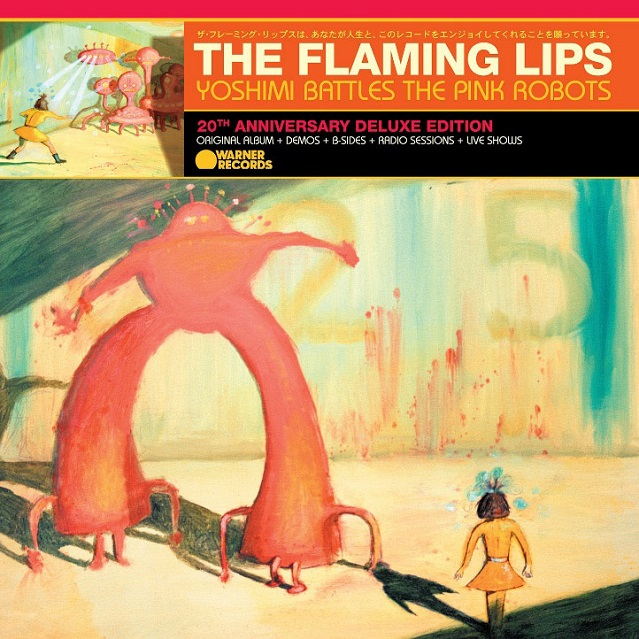
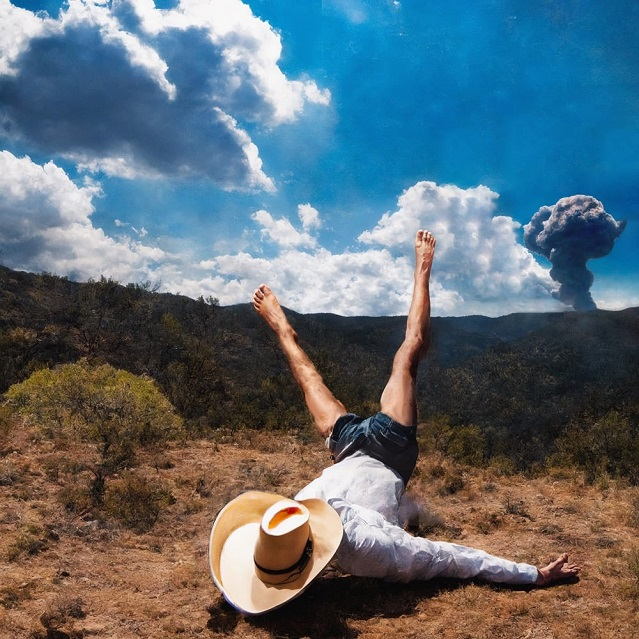
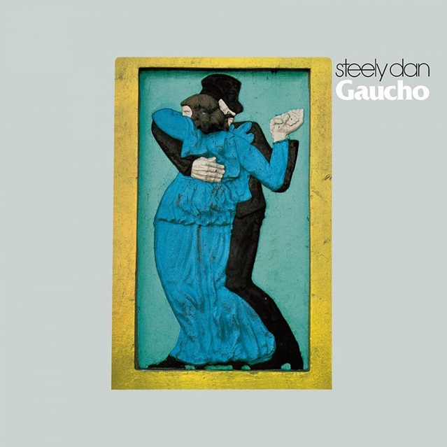

My Favorite Albums
Music plays a huge role in my daily life. Below are three albums that I frequently return to for many reasons.
Yoshimi Battles the Pink Robots
This album blends experimental rock with electronic noise and storytelling. The band has an optimistic view of humanity in this record and it shines. I saw this band perform in Summer of last year and they were amazing.

Favorite Tracks
- Fight Test
- In the Morning of the Magicians
- Ego Tripping at The Gates of Hell
3D Country
Geese’s 3D Country is a modern indie rock album with very unique and energetic vocals and unpredictable song structures. This band's first major success and one of my favorite albums to come back to.

Favorite Tracks
- 3D Country
- Undoer
- Cowboy Nudes
Gaucho
Gaucho by Steely Dan is a classic jazz-rock album. Overall one of my favorite relaxing albums, every song here is good.

Favorite Tracks
- Gaucho
- Babylon Sisters
- Hey Nineteen